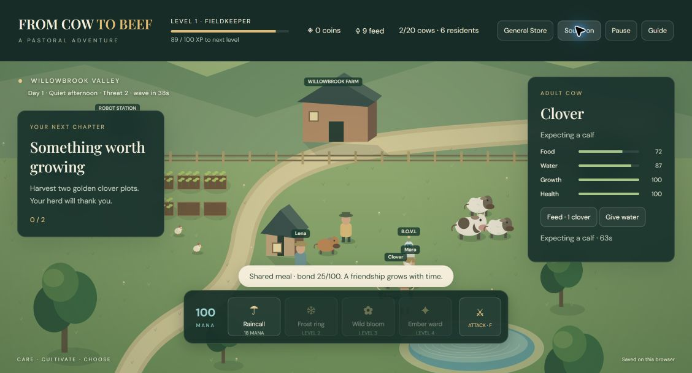
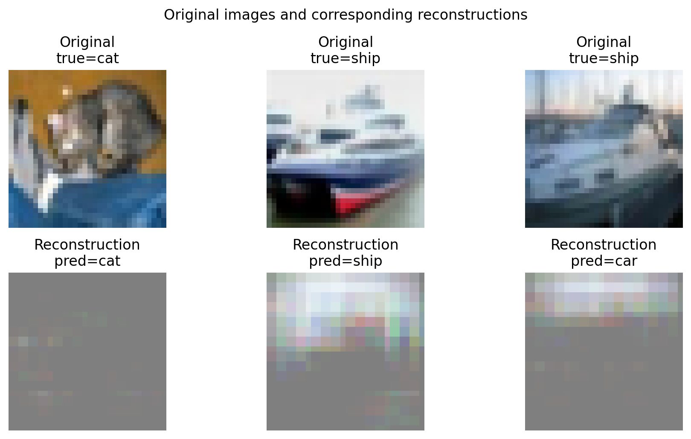

From Cow to Beef
A public browser game with simulation rules, persistent state, responsive interactions, and a score-driven audio experience.
I study Psychology and Statistics at Ben-Gurion University of the Negev and work as a research assistant in cognitive neuroscience. I use Python and R to explore data, build models, and make complex ideas easier to work with.
Source-backed implementations, visual outputs, and interactive tools.

A public browser game with simulation rules, persistent state, responsive interactions, and a score-driven audio experience.

A real CNN implementation that classifies CIFAR-10 images, reconstructs them through a deconvolutional branch, and inspects latent channels.

A score-led arrangement with event-level editing, multi-voice MIDI output, and an interactive music tool inside a public game project.
I bring a behavioural-science perspective to technical work: ask a clear question, examine the evidence, and communicate what the model can support.
My background in music also shapes how I build—through iteration, careful listening, and attention to structure.
Cognitive Neuroscience Lab · Ben-Gurion University
Collect, clean, and analyse behavioural research data in R and Python. Work with statistical modelling and machine-learning methods in temperament research.
Dean of Students · Ben-Gurion University
Teach Python to statistics students in individual sessions, including practical work with Pandas and NumPy.
Kenes Israel
Managed the ensemble, coordinated event logistics and production, and performed at organisational jazz events.
Ben-Gurion University of the Negev
Double-major studies combining behavioural science, quantitative methods, and research practice. Accepted to the Honors Guided Research programme in Psychology.
International exchange · University of Pécs, Hungary · 2024–2025
Interested in data science, applied science, machine learning, and research work with a clear connection to people.